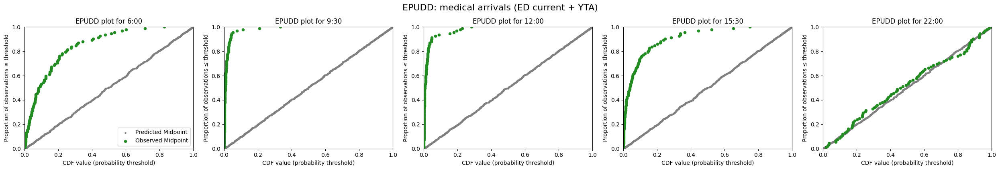
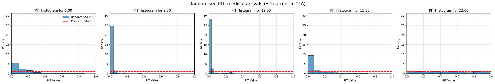
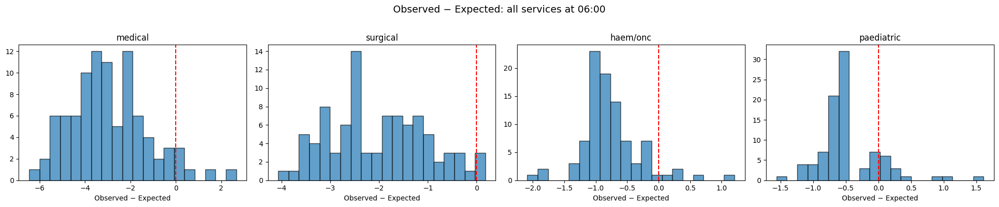
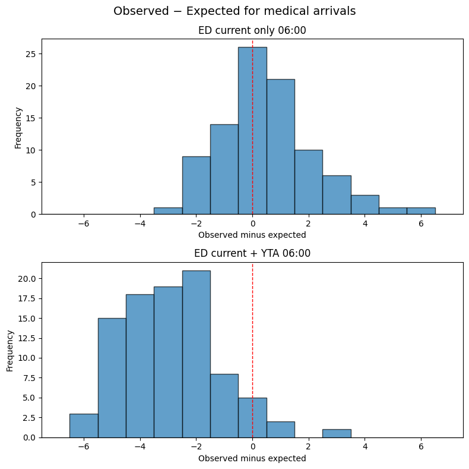

4d. Evaluate demand predictions
In the 3x_ notebooks, I showed how to evaluate individual model components in isolation: group snapshot predictions (3b), bed demand by hospital service (3d), and demand from patients yet to arrive (3f). Each of those notebooks contained bespoke evaluation code for one component at a time.
In this notebook, I show how the production data structures introduced in notebooks 4a–4c make it straightforward to evaluate all components of a configured pipeline in a uniform, systematic way — and to slice the evaluation by flow type, cohort, or service. No new evaluation methods are introduced; the same EPUDD plots, delta plots, MAE/MPE, and arrival rate comparisons are used, but they are driven by iterating over the production data structures rather than by writing ad hoc code for each component.
Approach
1. Build ServicePredictionInputs across the test set
For each snapshot date and prediction time in the test set, I construct the production-format inputs (as in notebook 4c), collecting the predicted distributions and corresponding observed values. Each ServicePredictionInputs object bundles all the flow components for a single service: the inflows dictionary contains entries like ed_current, ed_yta, non_ed_yta, elective_yta, and so on; the outflows dictionary contains departure flows.
2. Iterate over flows systematically
It is now possible to loop through inputs.inflows.items() for each service. Each FlowInputs object has a flow_type attribute (“pmf” or “poisson”) that determines which evaluation approach to use:
- For PMF flows (like
ed_current): evaluate using the EPUDD and delta plot methods from notebooks 3b and 3d - For Poisson flows (like
ed_yta): evaluate using the arrival rate comparison methods from notebook 3f
The evaluation method can be selected by flow_type, giving a uniform loop over all components.
Note, however, that if the emergency flows are aspirational (expressing demand as if ED 4-hour targets are met) they cannot be directly evaluated against observed numbers of admissions without careful thought, as we've discussed in notebook 3f.
3. Use FlowSelection to evaluate subsets
The FlowSelection class from notebook 4a would allow the same evaluation loop to produce different views of performance depending on which flows are selected. For example:
FlowSelection.emergency_only()— evaluate only emergency flowsFlowSelection.incoming_only()— evaluate only inflows, excluding departuresFlowSelection.default()— evaluate everything
This demonstrates how the production configuration can drive what gets evaluated, without changing the evaluation code itself. (But again, noting the point about aspirational flows.)
4. Evaluate at service level
Finally, I show evaluation of the combined PredictionBundle (arrivals, departures, net flow) for each service. This is something the 3x_ notebooks never do, because they don't have the concept of combining flows. It gives an overall picture of how the assembled pipeline performs for each service.
Code will follow to illustrate some of these points.
# Reload functions every time
%load_ext autoreload
%autoreload 2
Load data and train models
The data loading, configuration, and model training steps are identical to those demonstrated in detail in notebook 4c. Here we use prepare_prediction_inputs to perform all of these steps in a single call.
You can request the UCLH datasets on Zenodo. If you don't have the public data, change data_folder_name from 'data-public' to 'data-synthetic'.
from patientflow.train.emergency_demand import prepare_prediction_inputs
from patientflow.prepare import create_temporal_splits
from patientflow.load import get_model_key
from datetime import timedelta
import pandas as pd
data_folder_name = "data-public"
prediction_inputs = prepare_prediction_inputs(data_folder_name, verbose=False)
admissions_models = prediction_inputs["admission_models"]
spec_model = prediction_inputs["specialty_model"]
yta_model_by_spec = prediction_inputs["yta_model"]
ed_visits = prediction_inputs["ed_visits"]
params = prediction_inputs["config"]
model_name = "admissions"
x1, y1, x2, y2 = params["x1"], params["y1"], params["x2"], params["y2"]
prediction_window = timedelta(minutes=params["prediction_window"])
prediction_times = params["prediction_times"]
start_training_set = params["start_training_set"]
start_validation_set = params["start_validation_set"]
start_test_set = params["start_test_set"]
end_test_set = params["end_test_set"]
_, _, test_visits_df = create_temporal_splits(
ed_visits, start_training_set, start_validation_set,
start_test_set, end_test_set, col_name="snapshot_date",
verbose=False,
)
specialties = ["medical", "surgical", "haem/onc", "paediatric"]
1. Build evaluation dictionaries using get_prob_dist_by_service
The function get_prob_dist_by_service bridges composed service-level predictions with the existing evaluation infrastructure. Unlike get_prob_dist and get_prob_dist_using_survival_curve, which evaluate a single model component at a time, this function evaluates the composed prediction for one or more services — multiple flows convolved together via DemandPredictor. For each snapshot date in the test set it:
- Extracts the ED (and optionally inpatient) snapshot for the requested prediction time
- Calls
build_service_dataonce to produceServicePredictionInputsfor all specialties - Runs
DemandPredictor.predict_servicewith the chosenFlowSelectionfor each requested service - Counts actual admissions from the data for each service
- Returns the result in a
{service: {date: {'agg_predicted': DataFrame, 'agg_observed': int}}}structure
Because build_service_data is called once per date (not once per service), evaluating multiple services adds negligible overhead. All existing evaluation visualisation functions (plot_epudd, qq_plot, plot_randomised_pit, plot_deltas) work unchanged — just select the service you want from the outer dictionary.
from patientflow.aggregate import get_prob_dist_by_service
from patientflow.predict.demand import FlowSelection
# Get the unique snapshot dates in the test set
test_snapshot_dates = sorted(test_visits_df["snapshot_date"].unique())
print(f"Test set contains {len(test_snapshot_dates)} unique snapshot dates")
# Choose the flow selection for evaluation.
# Here we evaluate ED-current + yet-to-arrive arrivals.
service_to_evaluate = "medical"
flow_sel = FlowSelection.custom(
include_ed_current=True,
include_ed_yta=True,
include_non_ed_yta=False,
include_elective_yta=False,
include_transfers_in=False,
include_departures=False,
)
# Build evaluation dictionaries for each prediction time.
# get_prob_dist_by_service returns results for all requested services at once,
# so build_service_data is called only once per date (not once per service).
prob_dist_by_service_all = {}
for pt in prediction_times:
model_key = get_model_key(model_name, pt)
admission_model = admissions_models[model_key]
models_tuple = (admission_model, None, spec_model, yta_model_by_spec, None, None, None)
prob_dist_by_service_all[model_key] = get_prob_dist_by_service(
ed_visits=ed_visits,
snapshot_dates=test_snapshot_dates,
prediction_time=pt,
models=models_tuple,
specialties=specialties,
prediction_window=prediction_window,
x1=x1, y1=y1, x2=x2, y2=y2,
flow_selection=flow_sel,
prediction_component="arrivals",
verbose=True,
)
print(f"\nBuilt evaluation data for {len(prob_dist_by_service_all)} prediction times, "
f"{len(specialties)} services each")
Test set contains 92 unique snapshot dates
prediction_time=(6, 0): 4 services × 92 dates
prediction_time=(9, 30): 4 services × 92 dates
prediction_time=(12, 0): 4 services × 92 dates
prediction_time=(15, 30): 4 services × 92 dates
prediction_time=(22, 0): 4 services × 92 dates
Built evaluation data for 5 prediction times, 4 services each
2. EPUDD plot
The EPUDD (Evaluating Predictions for Unique, Discrete, Distributions) plot is the primary diagnostic for discrete probabilistic predictions. For a well-calibrated model, the observations should lie close to the diagonal.
from patientflow.viz.epudd import plot_epudd
# Select the service to plot. The outer dict is keyed by model_key,
# the inner dict by service name.
prob_dist_dict_all = {
mk: by_service[service_to_evaluate]
for mk, by_service in prob_dist_by_service_all.items()
}
plot_epudd(
prediction_times=prediction_times,
prob_dist_dict_all=prob_dist_dict_all,
model_name=model_name,
suptitle=f"EPUDD: {service_to_evaluate} arrivals (ED current + YTA)",
)

3. Randomised PIT histogram
The randomised Probability Integral Transform (PIT) histogram provides another view of calibration. For a well-calibrated model, the histogram should be approximately uniform.
from patientflow.viz.randomised_pit import plot_randomised_pit
plot_randomised_pit(
prediction_times=prediction_times,
prob_dist_dict_all=prob_dist_dict_all, # already extracted for service_to_evaluate above
model_name=model_name,
suptitle=f"Randomised PIT: {service_to_evaluate} arrivals (ED current + YTA)",
)

4. Evaluate across services
By looping over specialties, the same code produces evaluation plots for every service. Below we build a combined evaluation for all four specialties and plot EPUDD curves side by side.
import matplotlib.pyplot as plt
import numpy as np
# Pick a single prediction time for the cross-service comparison.
# Results for all services were already computed above — no extra calls needed.
example_pt = prediction_times[0]
example_model_key = get_model_key(model_name, example_pt)
by_service = prob_dist_by_service_all[example_model_key]
fig, axes = plt.subplots(1, len(specialties), figsize=(5 * len(specialties), 4), squeeze=False)
axes = axes.flatten()
for i, spec in enumerate(specialties):
prob_dist = by_service[spec]
observed_vals = [v["agg_observed"] for v in prob_dist.values()]
expected_vals = [
float(np.sum(np.arange(len(v["agg_predicted"]["agg_proba"])) * v["agg_predicted"]["agg_proba"]))
for v in prob_dist.values()
]
deltas = [o - e for o, e in zip(observed_vals, expected_vals)]
axes[i].hist(deltas, bins=20, edgecolor="black", alpha=0.7)
axes[i].axvline(0, color="red", linestyle="--")
axes[i].set_title(f"{spec}")
axes[i].set_xlabel("Observed − Expected")
fig.suptitle(
f"Observed − Expected: all services at {example_pt[0]:02d}:{example_pt[1]:02d}",
fontsize=14, y=1.02,
)
plt.tight_layout()
plt.show()

5. Evaluate different flow selections
The same function supports evaluating different subsets of flows by varying FlowSelection. Here we compare ED-current-only predictions against the combined ED-current + YTA predictions for the medical specialty at a single prediction time.
from patientflow.viz.observed_against_expected import plot_deltas
admission_model = admissions_models[example_model_key]
models_tuple = (admission_model, None, spec_model, yta_model_by_spec, None, None, None)
# Flow selection 1: ED current patients only
flow_sel_ed_only = FlowSelection.custom(
include_ed_current=True,
include_ed_yta=False,
include_non_ed_yta=False,
include_elective_yta=False,
include_transfers_in=False,
include_departures=False,
)
# Flow selection 2: ED current + YTA
flow_sel_ed_yta = FlowSelection.custom(
include_ed_current=True,
include_ed_yta=True,
include_non_ed_yta=False,
include_elective_yta=False,
include_transfers_in=False,
include_departures=False,
)
def build_delta_results(prob_dist_dict):
"""Extract observed and expected arrays from an evaluation dictionary."""
observed = []
expected = []
for v in prob_dist_dict.values():
observed.append(v["agg_observed"])
probs = np.array(v["agg_predicted"]["agg_proba"])
expected.append(float(np.sum(np.arange(len(probs)) * probs)))
return {"observed": np.array(observed), "expected": np.array(expected)}
# Each call evaluates all services for a single flow selection.
# We extract the service we want for the comparison.
all_ed_only = get_prob_dist_by_service(
ed_visits=ed_visits,
snapshot_dates=test_snapshot_dates,
prediction_time=example_pt,
models=models_tuple,
specialties=specialties,
prediction_window=prediction_window,
x1=x1, y1=y1, x2=x2, y2=y2,
services=[service_to_evaluate],
flow_selection=flow_sel_ed_only,
prediction_component="arrivals",
)
all_ed_yta = get_prob_dist_by_service(
ed_visits=ed_visits,
snapshot_dates=test_snapshot_dates,
prediction_time=example_pt,
models=models_tuple,
specialties=specialties,
prediction_window=prediction_window,
x1=x1, y1=y1, x2=x2, y2=y2,
services=[service_to_evaluate],
flow_selection=flow_sel_ed_yta,
prediction_component="arrivals",
)
results_ed_only = {example_model_key: build_delta_results(all_ed_only[service_to_evaluate])}
results_ed_yta = {example_model_key: build_delta_results(all_ed_yta[service_to_evaluate])}
plot_deltas(
results1=results_ed_only,
results2=results_ed_yta,
title1="ED current only",
title2="ED current + YTA",
suptitle=f"Observed − Expected for {service_to_evaluate} arrivals",
)

Summary
In this notebook I demonstrated how get_prob_dist_by_service bridges composed service-level predictions (notebooks 4a–4c) with the evaluation infrastructure used in the 3x_ notebooks.
The key points are:
-
Uniform evaluation format. The new function produces exactly the same
{date: {'agg_predicted': DataFrame, 'agg_observed': int}}dictionary format used byplot_epudd,plot_randomised_pit,qq_plot, andplot_deltas. No changes to the visualisation code are required. -
Flow selection drives evaluation. By varying the
FlowSelectionparameter, the same function can evaluate different subsets of flows: ED current only, ED current + YTA, all inflows, or net flow (arrivals minus departures). This replaces the ad hoc component-by-component evaluation in the 3x_ notebooks. -
Multi-service evaluation in a single pass.
build_service_datais called once per snapshot date and returns inputs for all specialties simultaneously.get_prob_dist_by_serviceexploits this by evaluating every requested service from the same call, avoiding redundant computation. The cross-service comparison in Section 4 pulls results directly from the already-computed dictionary. -
Same code path as inference. Under the hood,
get_prob_dist_by_servicecallsbuild_service_dataandDemandPredictor.predict_service— the same code path used for real-time inference. This means evaluation is testing the actual prediction logic, not a separate recreation of it.
Limitations and next steps
-
Observed count for composed flows. The current observed-count calculation uses the
is_admittedflag andspecialtycolumn from the snapshot data. This works well for current-ED and combined arrivals, but does not separately count yet-to-arrive patients. Component-level evaluation of YTA flows requires the approach from notebook 3f (comparing predicted Poisson rates against actual arrival counts from the inpatient arrivals dataset). -
Net flow evaluation. Evaluating net flow (arrivals minus departures) requires handling the
offsetattribute ofDemandPrediction, since the support can include negative values. The current evaluation visualisation functions assume zero-based indexing; extending them to handle offsets is planned for a future update. -
Hierarchy-level evaluation. The production system supports hierarchical predictions (specialty → division → hospital). Evaluating at higher hierarchy levels would require aggregating both predictions and observed counts to match. This is planned for a future update.